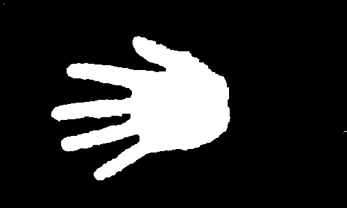
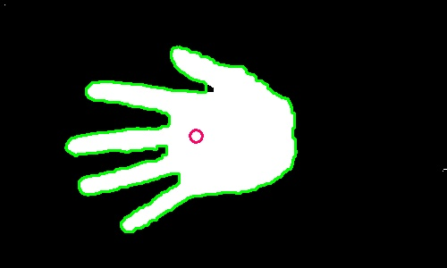
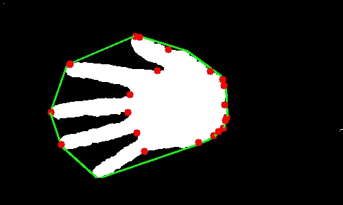
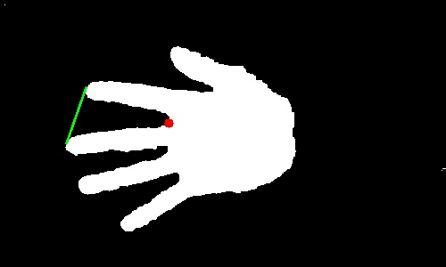
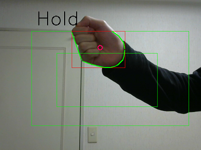
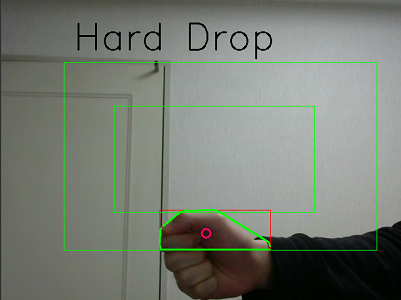
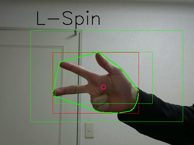
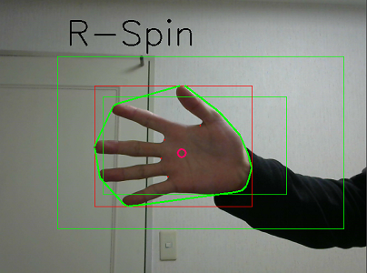
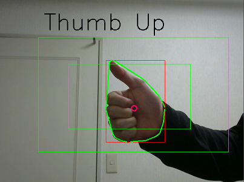
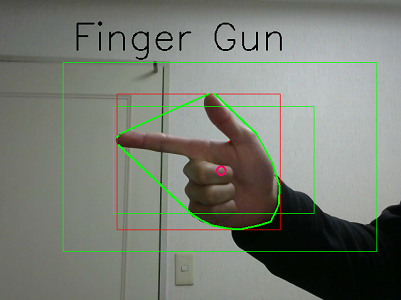

OpenCVでテトリスをプレイ
処理の流れ
元画像

・ノイズ除去のgaussian blur
・hsv変換からの色相範囲指定でおよそ肌色の領域を捉えてマスク化
まだ手の"内側"にノイズがあるので
・クロージング処理(膨張 → 収縮)

二値画像から輪郭(緑線)を検出、重心を計算(赤丸)
(対象は手の一つのみとしているので領域が最大の輪郭を選択)
ここで算出した重心位置をもとに上下左右の入力判定を行う。

一方で輪郭に関して凸包(緑線)と欠陥点を計算(赤点)

欠陥箇所に関して三角形を考え、欠陥点の頂点の角度を計算する
この角度が90°以下のところを手の指の隙間と判定する
(↓の画像では人差し指, 中指からなる緑線と、その間の欠陥点(赤点)ついて三角形を考えている。
ここでは欠陥点の頂点の角度が34.6°と計算された。よってこの欠陥点は指の隙間と判定できる。)
手をパーにしているのかグーにしているのかなどの判定は、指の隙間であると判定された箇所の個数から決めている。
(パーは4つ, グーは0つ)

引用元の記事ではグーとパーのみの判定であったが、
手の輪郭の面積と凸包の面積との比率という指標も用意した。
これらを組み合わせることで、判別可能なパターンを少しだけ増やした。


特にThumb UpとFinger Gunはどちらも指の隙間が1つと判定される。
ここで先ほど述べた輪郭と凸包の面積比を使うことで両者を判別できる。
以上の判別結果からpyautoguiを用いてキーボード入力に変換し、ブラウザ上のテトリスをプレイした。
実際のテトリスの操作にあたってはThumb UpとFinger Gunの手の形は使用していない。
(それほど入力パターンは必要なかった)
また、R-Spin, L-Spinはそれぞれテトリミノの時計回り(CW)、反時計回り(CCW)の回転である。